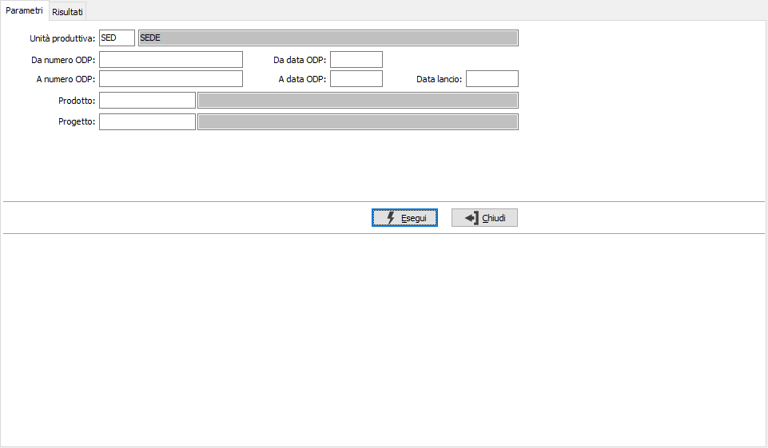
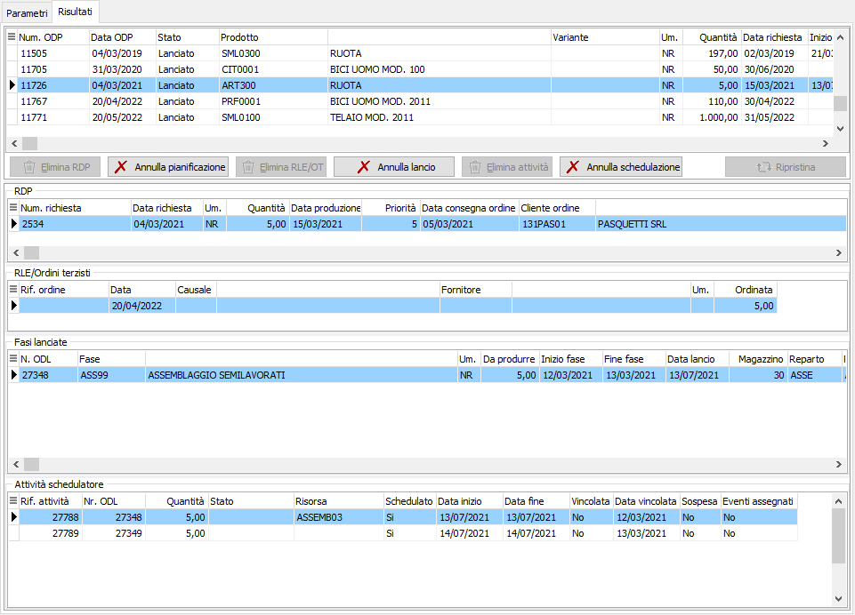
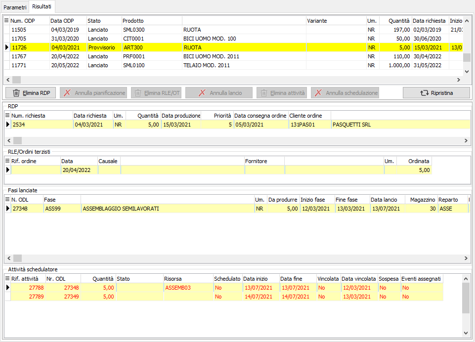

Annullamento messa in produzione
La funzione permette di agire in maniera interattiva consentendo di apportare, in maniera guidata, modifiche ad un singolo ODL/ODP. Di fatto è possibile tornare indietro da tutte le operazioni definitive attraverso specifiche funzioni governate tramite pulsanti.
Nei parametri viene richiesta l'unità produttiva con proposta l'unità produttiva di default valida per l'utente connesso ad OS1, è possibile solo scegliere l'unità produttiva, se gestite in configurazione le unità produttive multiple; è possibile specificare un range di ODP, oppure un periodo, una data lancio, un singolo prodotto e, se gestito il modulo, anche il progetto. Saranno selezionati solo ODP che abbiano uno stato Pianificato o Lanciato, non vengono inclusi ODP, provvisori, o lanciati che abbiano già generato buoni di prelievo oppure che risultino in corso di lavorazione per cui sono già stati fatti versamenti anche parziali.

La pagina dei Risultati riporta, nella griglia in alto, gli ODP selezionati indicandone l'attuale stato, nelle griglie seguenti vengono mostrate, RDP, RLE o ordini terzisti relativi ad eventuali fasi esterne, l'elenco delle fasi lanciate relative all'ODP e l'elenco delle attività, se presente il modulo di pianificazione.

In relazione allo stato dell'ODP vengono abilitati o meno i pulsanti funzionali di Annullamento/Eliminazione:
Annullamento schedulazione: annulla la schedulazione delle attività di tutti gli ODL.
Eliminazione attività: cancella tutte le attività collegate agli ODL, mantiene lo stato dell'ODP.
Annullamento lancio: annulla il lancio in produzione di tutti gli ODL e riporta l'ODP alla condizione di pianificato; annulla e cancella le eventuali attività presenti, richiede conferma.
Eliminazione RLE/ordine terzista: valido solo per ODP con fasi esterne; cancella fisicamente gli ordini terzisti ed annulla le RLE, mantiene lo stato di pianificato.
Annullamento pianificazione: annulla la pianificazione e riporta l'ODP in stato di Provvisorio; annulla e cancella il lancio, gli ordini terzisti e le RLE presenti, annulla e cancella le eventuali attività presenti, causa l'invalidamento del piano, richiede conferma.
Eliminazione RDP: cancella fisicamente le RDP che hanno originato l'ODP; causa l'invalidamento del piano.
Ripristina: riporta l'ODP e tutte le fasi, le RDP, le eventuali RLE o ordini terzisti e le attività alla condizione originale.
Nelle griglie le variazioni vengono evidenziate tramite la colorazione delle righe.

Una volta effettuate le necessarie modifiche, premendo il pulsante Salva presente nella Toolbar sarà possibile effettuare il salvataggio definitivo, previa conferma.